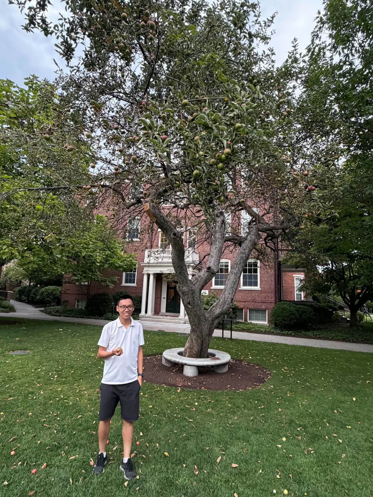

Ph.D. in Mathematics
The University of Chicago
Advisor: André Neves
Geometric analysis · University of Chicago
I study minimal surfaces and foliations through variational methods, dynamics, and geometric rigidity.

Photo credit: Lien Le
Selected work
Seminars
Background
The University of Chicago
Advisor: André Neves
The University of Chicago
Hong Kong University of Science and Technology
Senior thesis: Kähler–Ricci flow and conformal submersion . Advisor: Frederick Tsz-Ho Fong.
At the University of Chicago
Honors
Gold Medal · 2014 and 2015
Hong Kong University of Science and Technology
Contact
I am based in the Department of Mathematics at the University of Chicago.